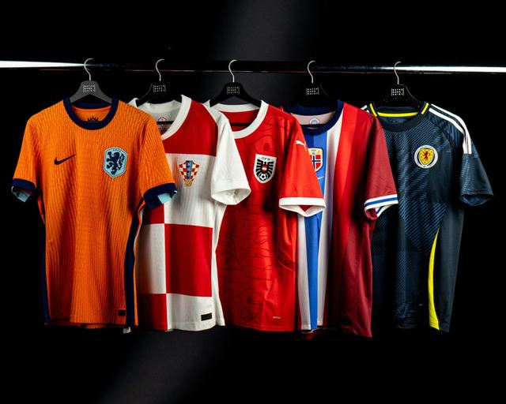
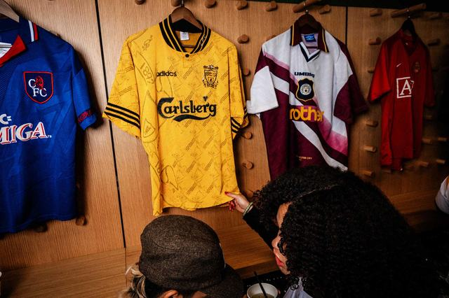

Vestiaire certifié · France
Des pièces de foot authentifiées — domicile, third, rétro, match worn. Tu vends le tien en photos jointes. On check. On propose un prix sous 24h.


12 maillots de foot en rotation. L’ordre change à chaque visite — comme un arrivage qui vient d’être pendu.
Oui. Le vestiaire mélange les 12 pièces au hasard dès que tu ouvres la page. Ce n’est pas un stock qui « saute » : ce sont les mêmes maillots, juste réaccrochés dans un autre ordre. L’idée, c’est de retrouver le réflexe du vrai shop — tu ne tombes pas toujours sur la même case en premier. Un rafraîchissement suffit pour tout remélanger. Rien n’est stocké sur ton ordi : le tirage se refait à chaque chargement.
Oui, tout de suite. Tu vas sur Revendre, tu remplis prénom, mail, club, saison, taille, état, et tu glisses tes photos dans la zone de pièces jointes. Pas besoin d’envoyer le maillot pour avoir un prix. L’estimation part par mail, en général sous 24h (souvent le soir même en semaine). Si l’offre te va, on t’envoie le protocole d’expédition. Si elle ne te va pas, tu gardes la pièce, aucun frais, aucun engagement. On n’estime pas « pour la forme » : si la pièce est hors rayon ou clairement fake, on te le dit clairement plutôt que de te faire perdre un colis.
Le minimum utile, c’est quatre clichés nets, en lumière du jour, maillot à plat ou sur cintre, pas de filtre Instagram :
1) Face entière, bien cadré, badges lisibles.
2) Dos entier (flocage, numéro, publicité dorsale s’il y en a).
3) Étiquette col + éventuel code année / hologramme / size tag intérieur.
4) Gros plan flocage ou écusson.
Si tu as un défaut — trou d’accroche, tache d’herbe, print qui craque, couture ouverte, col déformé — ajoute un 5ᵉ gros plan. Pour un match worn, photographie aussi les traces de jeu (manches, bas de maillot). Pour une dédicace, la signature doit être nette, pas un flou de 3 pixels. Sans étiquette visible, le check auth est plus long, parfois impossible : on te demandera alors d’autres angles plutôt que d’inventer une authenticité.
Non. Sport Resel ne met en vitrine que des pièces que l’on considère authentiques après check. Ça exclut : Thai quality, « player version » marketplace à 18 €, prints off-centre, badges thermocollés trop brillants, étiquettes fantaisistes, maillots « very similar ». On refuse aussi les pièces dont la provenance est trop floue (lot non sourcé, story contradictoire). L’estimation reste gratuite : tu n’es pas facturé pour un refus. On préfère te le dire tout de suite plutôt que de recycler un fake dans le vestiaire. C’est le seul argument du shop — 0 fake en vitrine — et on ne le brade pas.
On croise plusieurs couches, jamais une seule photo « ça a l’air bon » :
— Étiquette : police, composition, year code, hologramme selon les ères (90s ≠ 2010 ≠ 2024).
— Coupe : fan vs player issue (aisselles, longueur de corps, col).
— Print : flocage flock / heat-press / stitched, alignement des numéros, type de sponsor de la saison.
— Textile : gramme, maille, banding des années 90, climacool / aeroready plus tardifs.
— Références : catalogues, photos vestiaire, bases collector.
Match worn / player issue : on demande un maximum de preuves (certificat, photo du maillot dans le vestiaire, message d’un staff, ticket, article). Si le doute reste après ça, la pièce ne passe pas. Un « on verra bien à la réception » n’est pas une méthode — le doute se règle avant l’envoi, ou on décline.
Cinq leviers, dans cet ordre à peu près : club / sélection, saison (un 98 ou un 06 ne se comporte pas comme un 24/25 grand public), rareté réelle (pas « rare selon le groupe Facebook »), état physique, et demande du moment. Un rétro 90s neuf avec étiquette se valorise presque toujours mieux qu’un maillot récent porté deux saisons. Un third bizarre en XS peut valoir plus qu’un domicile M trop courant. L’offre que tu reçois est ferme pour 7 jours : tu acceptes, tu déclines, ou tu poses une question. On ne « teste » pas un prix pour voir si tu lâches. Si le marché bouge vraiment (sortie d’un documentaire, retraite d’un joueur, finale), on peut réestimer — mais seulement si tu le redemandes.
Le prix annoncé est le montant que tu touches, net, par virement. On ne te sort pas une ligne « frais de dossier 12 % » après coup. Sport Resel se rémunère à la revente, pas sur ton dos au moment du rachat. Les seuls frais qui restent à ta charge côté vendeur : l’expédition jusqu’à chez nous (suivi obligatoire). De l’autre côté, l’acheteur paie le maillot + le port annoncé avant validation. Pas de surprise ni pour toi ni pour lui. Si on doit te renvoyer la pièce (elle ne correspond pas), les frais retour sont précisés dans le mail de refus — en général à ta charge si l’écart vient des photos, à la nôtre si on s’est trompés.
Quand tu acceptes l’offre, tu reçois un protocole court : adresse, délai d’envoi (en général 5 jours), et la façon de protéger le textile. On veut un maillot plié à plat, dans une pochette ou entre deux cartons, jamais en boule dans un sac plastique. Colis suivi obligatoire — photo du bordereau avant dépôt, c’est notre preuve à tous les deux. À l’arrivée on recoupe tes photos : mêmes défauts, même flocage, même étiquette. Si ça correspond, validation et paiement. Si ça ne correspond pas (état sous-évalué, pièce différente, odeur moisi non déclarée), on te le renvoie et l’offre tombe. On ne « négocie minus » en sneak : soit ça match, soit ça rentre chez toi.
Après réception physique + check auth. Pas avant. Virement SEPA sur IBAN FR, sous 48h ouvrées une fois la pièce validée. Week-end et jours fériés glissent au premier ouvré. On te demande le RIB au moment où tu acceptes l’offre, pas dans le premier formulaire — ça évite de circuler un IBAN pour une estimation que tu vas peut-être refuser. Pas de PayPal « amis », pas de crypto, pas de cash en main propre : le virement laisse une trace des deux côtés, c’est voulu. Si un virement coince (mauvais IBAN), on te prévient le jour même, on ne laisse pas pourrir.
France métropolitaine en colis suivi, délai habituel 48–72h après expédition. Corse, DOM-TOM et Europe : on calcule le port avant que tu valides, tu n’as pas de surprise à la caisse. Pas de point relais imposé, pas de retrait boutique pour l’instant — tout part en colis, le vestiaire n’est pas un local d’accueil. Un numéro de suivi part dès que le maillot quitte chez nous. Si le transporteur affiche « livré » et que tu n’as rien, tu as 48h pour nous écrire : on ouvre le litige avec le bordereau, on ne te laisse pas seul face à un avis de passage fantôme.
Souvent non, et c’est là que les retours naissent. Les rétro 90s et early 00s taillent plus petit, parfois d’une taille entière, surtout les coupes européennes coton / polyester fin. Un « L 1996 » n’est pas un L 2025 oversize. Quand on a les mesures (aisselle à aisselle, longueur dos, largeur épaules), on les met sur la fiche. Quand on ne les a pas encore, on l’écrit : « taille étiquette seulement ». En doute, tu écris avant d’acheter plutôt que de jouer au pile ou face. Les versions joueur (player issue) sont encore plus étroites. Les maillots enfant floqués légende restent en taille enfant : on ne les vend pas comme un S adulte.
Oui, 14 jours après réception, si la pièce n’a pas été portée, lavée, parfumée, ni coupée. L’étiquette de vente Sport Resel doit encore être là. Tu nous préviens par mail, on t’envoie l’adresse retour, tu expédies en suivi. Remboursement du maillot une fois le colis contrôlé — le port aller n’est pas repris, sauf erreur de notre part (mauvaise référence, défaut non photographié). Exceptions : match worn, pièces uniques et lots marqués « vente ferme » — pas de rétractation, sauf si on s’est trompés sur la description. C’est écrit sur la fiche avant l’achat, pas après.
Fan / replica boutique authentique : la version vendue en club shop. Coupe loisir, souvent plus large. Ce n’est pas un fake : c’est simplement pas la version joueur.
Player issue : coupe pro, heat-press, parfois un col ou une maille différente. Elle peut n’avoir jamais vu un terrain. Sans certif, on authentifie la coupe, on n’invente pas le nom du titulaire.
Match issued : préparée pour un match (numéro, patch), non portée ou portée zéro minute.
Match worn : portée en jeu. Traces possibles (herbe, friction, numéro qui lève). Un match worn n’est jamais « comme neuf » — si on te vend du porté comme du mint, c’est qu’on s’est plantés, et tu as le droit de le dire.
Le cœur du vestiaire, c’est le foot : clubs, sélections, rétro 90s–00s, gardiens, thirds. On regarde au cas par cas le basket (NBA / Euroleague) et, plus rarement, un rugby, une combi F1 ou un textile moto si la pièce est claire et sourcée. Envoie les photos quand même. Si ce n’est pas notre rayon, on te le dit dans la journée, sans te faire tourner. On ne « diversifie » pas pour remplir des cases vides avec n’importe quel polyester.
Estimation : sous 24h ouvrées, souvent le soir même si le dossier est complet (photos nettes + taille + état). Un week-end, un jour férié ou un lot de 8 maillots peut glisser d’un jour — on prévient plutôt que de laisser le mail pourrir. Paiement après réception : 48h ouvrées. Relance : si tu n’as rien à H+36, réécris avec l’objet d’origine, on retrouve le fil. On ne laisse pas une estimation en rade parce que le flocage était flou : dans ce cas on te redemande deux photos, le délai repart au moment où elles arrivent.